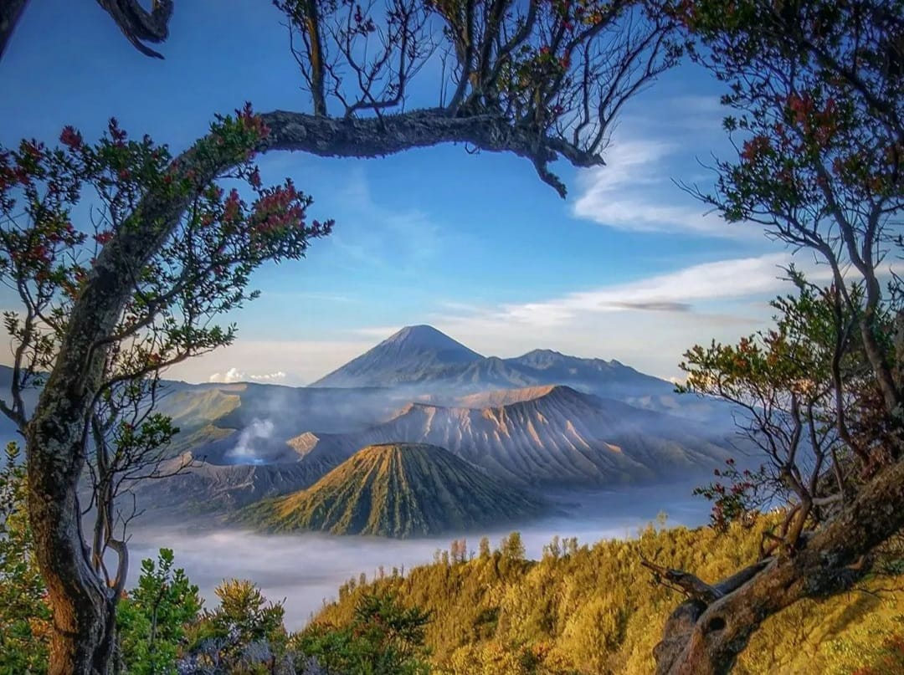
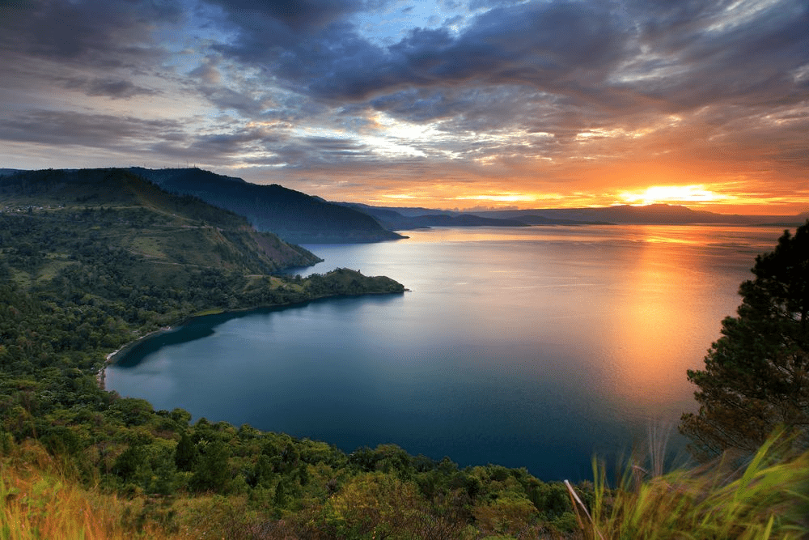

Informasi Tambahan
Persiapkan perjalanan dengan baik agar wisata tetap aman, nyaman, dan tidak merusak alam.
Sebelum Berangkat
- Periksa cuaca dan kondisi jalur perjalanan.
- Pastikan destinasi sedang buka dan dapat dikunjungi.
- Siapkan obat pribadi, air minum, dan perlengkapan yang sesuai.
- Simpan nomor kontak petugas atau pengelola destinasi.
Jaga Alam Saat Berwisata
- Bawa kembali sampah yang kamu hasilkan.
- Jangan mengambil tumbuhan, batu, atau satwa dari habitatnya.
- Ikuti jalur dan petunjuk keselamatan yang tersedia.
- Hormati adat dan aturan masyarakat setempat.
Informasi pariwisata Indonesia dapat ditemukan melalui: Portal Pariwisata Indonesia
Pesona Wisata Alam Indonesia
Ditulis oleh Tim Jelajah Nusantara
Diterbitkan pada 11 Oktober 2026
Indonesia memiliki beragam keindahan alam, mulai dari pegunungan, pantai, danau, hingga hutan tropis. Setiap daerah mempunyai karakteristik dan daya tarik tersendiri yang menarik untuk dijelajahi.
Wisata alam bukan hanya menjadi tempat untuk berlibur, tetapi juga menjadi tempat untuk mengenal keanekaragaman hayati dan budaya masyarakat setempat. Oleh karena itu, pengunjung perlu menjaga kebersihan dan kelestarian lingkungan selama melakukan perjalanan.
Alam bukan sekadar tempat yang kita kunjungi, tetapi juga lingkungan yang harus kita jaga.
Salah satu cara menjadi wisatawan yang bertanggung jawab adalah menerapkan prinsip 3R, mengurangi sampah, dan menghormati aturan di setiap destinasi wisata.
Rekomendasi Destinasi Wisata
1. Gunung Bromo

Gunung Bromo, Jawa Timur. Foto: Bernard Gagnon, melalui , lisensi CC BY-SA 3.0 .

Gunung Bromo terkenal dengan pemandangan matahari terbit, lautan pasir, dan lanskap pegunungannya. Destinasi ini cocok bagi wisatawan yang ingin menikmati suasana alam.
Lokasi: Jawa Timur
2. Danau Toba

Danau Toba, Sumatra Utara. Foto: Bisajunisa, melalui , lisensi CC BY-SA 4.0 .

Danau Toba merupakan danau vulkanik yang memiliki panorama perairan luas dan perbukitan. Kawasan ini juga dikenal dengan budaya masyarakat Batak.
Lokasi: Sumatra Utara
3. Raja Ampat

Raja Ampat, Papua Barat Daya. Foto: Dennis Keller, melalui , lisensi CC BY 2.0 .
Raja Ampat terkenal dengan gugusan pulau-pulau karst, perairan jernih, dan kekayaan kehidupan bawah laut. Kelestarian ekosistemnya perlu dijaga oleh semua pengunjung.
Lokasi: Papua Barat Daya
Perbandingan Destinasi
Perbandingan lokasi, daya tarik, dan kegiatan wisata alam| Destinasi | Provinsi | Daya Tarik | Kegiatan |
|---|---|---|---|
| Gunung Bromo | Jawa Timur | Pemandangan matahari terbit | Menikmati matahari terbit dan lautan pasir |
| Danau Toba | Sumatra Utara | Danau dan perbukitan | Menikmati pemandangan dan mengenal budaya Batak |
| Raja Ampat | Papua Barat Daya | Wisata bahari | Snorkeling dan menikmati pulau-pulau karst |
Tips Menjelajahi Alam
Perhatikan beberapa hal berikut sebelum bepergian.
- Periksa kondisi cuaca dan jalur perjalanan.
- Siapkan perlengkapan sesuai destinasi.
- Bawa botol minum dan tas yang dapat digunakan kembali.
- Jangan membuang sampah sembarangan.
- Patuhi petunjuk keselamatan dari petugas setempat.
Perlengkapan yang Perlu Dibawa
- Botol minum
- Obat-obatan pribadi
- Perlengkapan pertolongan pertama
- Pakaian sesuai kondisi cuaca
- Kantong untuk membawa kembali sampah
Tahukah Kamu?
Mengapa kita harus menjaga wisata alam?
Lingkungan yang terjaga membantu melindungi tumbuhan, satwa, sumber air, dan kehidupan masyarakat sekitar. Wisata yang bertanggung jawab juga membantu menjaga keindahan alam agar dapat dinikmati generasi mendatang.
Apa yang dimaksud dengan ekowisata?
Ekowisata merupakan kegiatan wisata yang memperhatikan kelestarian lingkungan, memberikan pengalaman edukatif, serta menghargai kehidupan dan budaya masyarakat lokal.
Kirim Pesan kepada Kami
Bagikan destinasi wisata alam yang ingin kamu kunjungi.